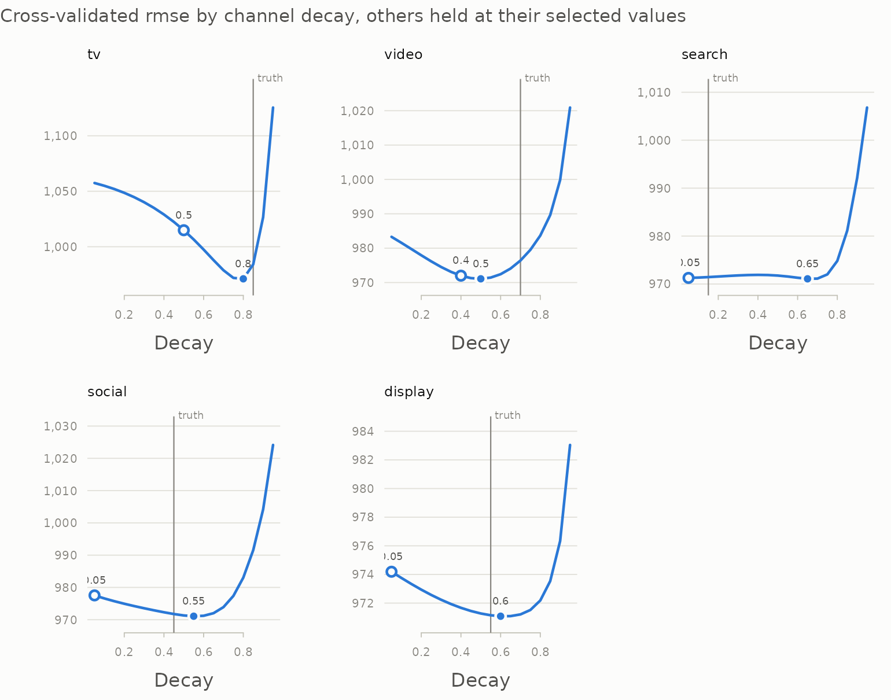
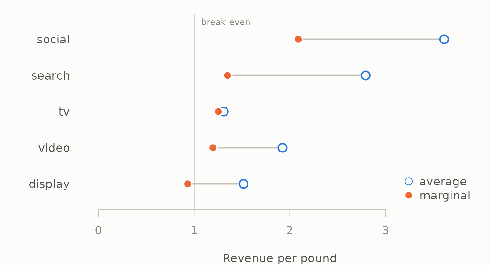
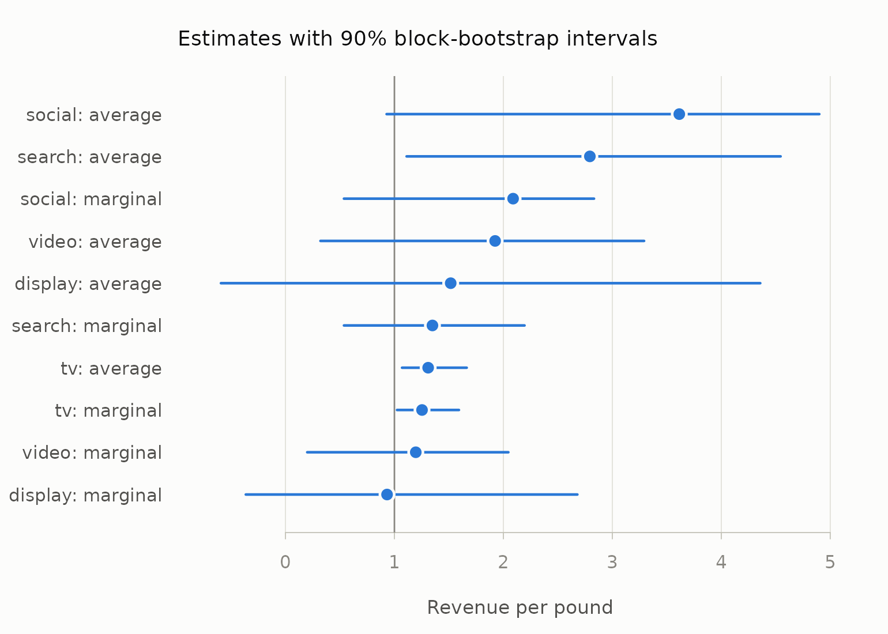

Walkthrough: from weekly spend to a budget recommendation
Source:vignettes/articles/budget-walkthrough.Rmd
budget-walkthrough.RmdThis article follows one question from raw data to an answer:
if the marketing budget stays the same, should any of it move
between channels? It uses the north geography of
mm_weekly, 156 weeks of five channels, generated from known
parameters so that every step can be checked against the truth.
The getting-started vignette introduces each function. This article is about using them together, and about where the answer is solid and where it is not.
library(mediamix)
data(mm_weekly)
channels <- c("tv", "video", "search", "social", "display")
truth <- attr(mm_weekly, "truth")
north <- mm_weekly[mm_weekly$geo == "north", ]
north <- north[order(north$date), ]
north$week <- seq_len(nrow(north))1. Check the data can answer the question
d <- diagnose_media(north, media = channels, decay = 0.6)
d
#>
#> ── Media diagnostics
#> 156 observations across 1 series, 5 channels
#> Collinearity measured on adstocked media.
#> Ungrouped. On panel data, pass `by` so that collinearity is measured within
#> series.
#> ✔ No structural problems found.
#>
#> Inspect $variation, $collinearity, $correlations.
d$collinearity[, c("channel", "vif", "most_correlated_with", "correlation")]
#> channel vif most_correlated_with correlation
#> 1 search 1.188 tv 0.3173
#> 2 tv 1.176 search 0.3173
#> 3 social 1.169 display 0.2801
#> 4 display 1.148 social 0.2801
#> 5 video 1.076 display 0.1451decay = 0.6 measures collinearity after a representative
adstock, since smoothed series correlate more than raw spend and the
model sees the smoothed ones. No channel is collinear enough to make its
coefficient meaningless, and every one varies. Video and display are
dark in a third or more of weeks, so they carry less information than
their row count suggests — worth remembering when their numbers come
out.
2. Carryover: how well does the data identify it?
Tune every channel’s carryover at once, in one model that also holds the controls, so no channel is credited with another’s effect or with the trend:
controls <- north[c("week", "price", "seasonality", "holiday")]
grid <- seq(0.05, 0.95, by = 0.05)
joint <- tune_carryover_joint(north[channels], north$revenue,
controls = controls, decays = grid)
rbind(truth = truth$decay[channels],
best = joint$best$decay,
one_se = joint$best_1se$decay)
#> tv video search social display
#> truth 0.85 0.7 0.15 0.45 0.55
#> best 0.80 0.5 0.65 0.55 0.60
#> one_se 0.50 0.4 0.05 0.05 0.05
plot(joint, truth = truth$decay)
Television, social and display land within 0.1 of the truth and video within 0.2. Search does not, and its profile says why: it is nearly flat, so the data holds almost no information about search’s carryover. The one-standard-error choice falls back to a short carryover, which is both the conservative claim and, here, close to right.
The joint search does not tune saturation. To keep this walkthrough
about the decision rather than the estimation, the rest of it
uses the generating parameters — what a full joint search over carryover
and saturation, as in vignette("tidymodels"), is
trying to reach. Section 7 comes back to what happens when television’s
carryover is uncertain.
3. Fit the model
spec <- lapply(channels, function(ch) list(
adstock = list(decay = truth$decay[[ch]]),
saturation = list(half_max = truth$half_max[[ch]],
shape = truth$shape[[ch]])
))
names(spec) <- channels
transform_plan <- function(plan, spec) {
as.data.frame(lapply(stats::setNames(channels, channels), function(ch) {
media_transform(plan[[ch]], adstock = spec[[ch]]$adstock,
saturation = spec[[ch]]$saturation)
}))
}
media <- transform_plan(north, spec)
model_data <- cbind(media, controls)
fit <- lm(north$revenue ~ ., data = model_data)
round(rbind(estimate = coef(fit)[channels], truth = truth$beta[channels]))
#> tv video search social display
#> estimate 6013 1885 2622 2258 760
#> truth 5200 2400 4100 1800 9004. Where did the revenue come from?
contrib <- contributions(media, fit, index = north$date)
avg <- roi(contrib, north[channels])
avg
#> channel contribution spend roi
#> 1 social 132709 36716 3.614
#> 2 search 208307 74560 2.794
#> 3 video 102461 53248 1.924
#> 4 display 40853 26937 1.517
#> 5 tv 349629 266978 1.310Every channel returns more than it costs on average. On this table alone the tempting move is to take money from television, the lowest average ROI, and give it to social, the highest.
5. What would the next pound do?
Average ROI describes the budget that was spent. The reallocation
question is about the margin, and marginal_roi()
answers it by re-running the whole transform on a slightly larger
budget:
marginal <- do.call(rbind, lapply(channels, function(ch) {
cbind(channel = ch, marginal_roi(
north[[ch]], coefficient = coef(fit)[[ch]],
adstock = spec[[ch]]$adstock, saturation = spec[[ch]]$saturation
))
}))
marginal <- merge(marginal[, c("channel", "mroi")],
avg[, c("channel", "roi", "spend")], by = "channel")
marginal[order(-marginal$mroi), ]
#> channel mroi roi spend
#> 3 social 2.0892 3.614 36716
#> 2 search 1.3490 2.794 74560
#> 4 tv 1.2534 1.310 266978
#> 5 video 1.1961 1.924 53248
#> 1 display 0.9324 1.517 26937The ranking changes. Social still has the highest marginal return, but television is no longer at the bottom: its S-shaped response means its next pound works nearly as hard as its average one. Display is now last, and its marginal return is below 1 — the last pounds spent on it did not pay for themselves.
ink <- mm_palette(role = "ink")
cols <- mm_palette(2)
o <- marginal[order(marginal$mroi), ]
op <- par(mar = c(4, 6, 1, 1), bg = ink[["surface"]], fg = ink[["axis"]])
plot(NA, xlim = c(0, max(o$roi) * 1.05), ylim = c(0.5, nrow(o) + 0.5),
yaxt = "n", bty = "n", xlab = "Revenue per pound", ylab = "",
col.axis = ink[["muted"]], col.lab = ink[["secondary"]])
axis(2, at = seq_len(nrow(o)), labels = o$channel, las = 1, lwd = 0,
col.axis = ink[["secondary"]])
abline(v = 1, col = ink[["muted"]])
text(1, nrow(o) + 0.45, "break-even", pos = 4, cex = 0.75, col = ink[["muted"]])
segments(o$mroi, seq_len(nrow(o)), o$roi, seq_len(nrow(o)),
col = ink[["axis"]], lwd = 2)
points(o$roi, seq_len(nrow(o)), pch = 21, bg = ink[["surface"]], col = cols[1],
cex = 1.6, lwd = 2)
points(o$mroi, seq_len(nrow(o)), pch = 21, bg = cols[2],
col = ink[["surface"]], cex = 1.6, lwd = 2)
legend("bottomright", c("average", "marginal"), pch = 21,
pt.bg = c(ink[["surface"]], cols[2]), col = c(cols[1], ink[["surface"]]),
pt.cex = 1.4, bty = "n", text.col = ink[["secondary"]])
par(op)So the candidate move is display to social, not television to social.
6. How sure are we?
Every number so far is a point estimate from one sample of 156 weeks. A block bootstrap resamples runs of consecutive weeks, refits the model, and recomputes, which shows how much of the ranking survives sampling noise. The transform is not re-run on the resampled rows — that would glue unrelated weeks together and carry spend across the joins — so each replicate refits the coefficients on resampled rows and recomputes average and marginal return on the original spend plan:
boot_data <- cbind(revenue = north$revenue, media, controls)
returns <- function(d) {
f <- lm(revenue ~ ., data = d)
unlist(lapply(channels, function(ch) {
r <- marginal_roi(north[[ch]], coefficient = coef(f)[[ch]],
adstock = spec[[ch]]$adstock,
saturation = spec[[ch]]$saturation)
stats::setNames(c(r$roi, r$mroi),
paste(ch, c("average", "marginal"), sep = ": "))
}))
}
boot <- block_bootstrap(boot_data, returns, times = 200, block_length = 13,
seed = 2026)
boot
#>
#> ── Block bootstrap
#> 200 replicates, blocks of 13 rows, 90% percentile intervals
#> term estimate lower upper std_error
#> tv: average 1.3096 1.0698 1.664 0.1924
#> tv: marginal 1.2534 1.0240 1.592 0.1842
#> video: average 1.9242 0.3211 3.291 0.9783
#> video: marginal 1.1961 0.1996 2.046 0.6081
#> search: average 2.7938 1.1118 4.545 1.0664
#> search: marginal 1.3490 0.5368 2.194 0.5149
#> social: average 3.6145 0.9283 4.900 1.2335
#> social: marginal 2.0892 0.5365 2.832 0.7130
#> display: average 1.5166 -0.5923 4.358 1.5145
#> display: marginal 0.9324 -0.3642 2.679 0.9311
plot(boot, reference = 1, xlab = "Revenue per pound")
The intervals are wide. Only television’s returns are clearly above break-even; every other channel’s interval crosses 1, and display’s reaches below zero. Two channels’ intervals overlapping does not settle a comparison between them, though — their estimates move together from replicate to replicate — so ask the paired question directly:
reps <- attr(boot, "replicates")
c(social_beats_display = mean(reps[, "social: marginal"] >
reps[, "display: marginal"]),
social_beats_tv = mean(reps[, "social: marginal"] >
reps[, "tv: marginal"]))
#> social_beats_display social_beats_tv
#> 0.72 0.80That is the honest strength of the evidence for moving money into social: more likely right than wrong, and not more than that. It is a reason to run the move as a test, not to announce it.
7. Test the move before recommending it
A marginal return is a derivative. A real reallocation is a finite change, and the response curves bend along the way, so simulate the new plan through the model rather than multiplying by a marginal rate. Everything except the two channels is held fixed, and the controls do not change, so the difference in predicted revenue is the difference in media response:
media_revenue <- function(plan, spec) {
m <- transform_plan(plan, spec)
sum(vapply(channels, function(ch) coef(fit)[[ch]] * sum(m[[ch]]),
numeric(1)))
}
# Move an amount of budget from one channel to another. Each channel's
# flighting pattern is kept: the change is spread over its weeks in
# proportion to its existing spend.
move <- function(from, to, amount, spec) {
plan <- north
plan[[from]] <- plan[[from]] * (1 - amount / sum(plan[[from]]))
plan[[to]] <- plan[[to]] + amount * plan[[to]] / sum(plan[[to]])
gain <- media_revenue(plan, spec) - media_revenue(north, spec)
c(moved = amount, revenue_change = gain, per_pound_moved = gain / amount)
}
tenth <- 0.10 * sum(north$display)
rbind(
`display -> social` = move("display", "social", tenth, spec),
`tv -> social` = move("tv", "social", tenth, spec),
`display -> social, 2.5x` = move("display", "social", 2.5 * tenth, spec)
)
#> moved revenue_change per_pound_moved
#> display -> social 2694 2871 1.0659
#> tv -> social 2694 2090 0.7760
#> display -> social, 2.5x 6734 6213 0.9226Moving a tenth of display’s budget into social raises predicted revenue at no extra cost. Moving the same amount out of television instead — the move the average-ROI table suggested — gains less, because it gives up television’s still-steep response. Moving two and a half times as much out of display gains more in total but less per pound, as social climbs its own curve.
Two checks before this goes in a deck. First, is the new plan inside the data?
peak <- function(amount) max(north$social + amount * north$social /
sum(north$social))
c(observed = max(north$social), smaller_move = peak(tenth),
larger_move = peak(2.5 * tenth))
#> observed smaller_move larger_move
#> 652.0 699.8 771.6Both moves push social’s busiest week above anything in the data: the smaller by about 7%, the larger by about 18%. A little beyond the observed range is the unavoidable price of asking what more would do, but the further out a plan goes, the more of its predicted gain is the fitted curve’s shape rather than evidence. The smaller move stays close enough to the data to be worth testing; the larger one should wait for that test.
Second, how sensitive is the answer to carryover it could not pin down? In section 2 the data was consistent with a television decay as low as the one-SE value. Refit with that and ask again:
tv_alt <- joint$best_1se$decay[joint$best_1se$channel == "tv"]
spec_alt <- spec
spec_alt$tv$adstock$decay <- tv_alt
media_alt <- transform_plan(north, spec_alt)
fit_alt <- lm(north$revenue ~ ., data = cbind(media_alt, controls))
c(tv_decay = tv_alt,
tv_mroi_truth = marginal$mroi[marginal$channel == "tv"],
tv_mroi_alt = marginal_roi(
north$tv, coefficient = coef(fit_alt)[["tv"]],
adstock = spec_alt$tv$adstock, saturation = spec_alt$tv$saturation
)$mroi)
#> tv_decay tv_mroi_truth tv_mroi_alt
#> 0.5000 1.2534 0.6494Television’s marginal return depends heavily on a carryover the data only loosely identifies: at the shorter decay its next pound no longer pays for itself. The display-to-social move does not involve television, which is one more reason to prefer it — it is the recommendation that survives the uncertainty. Whether television is over- or under-funded is a question this data cannot settle, and saying so is part of the answer.
8. What to say, and what not to
The recommendation this analysis supports is modest and specific: move around a tenth of display’s budget into social as a test, leave television alone until its carryover is better measured, and scale the move only if the test confirms it. The bootstrap in section 6 is why the word “test” is not optional. Every number here rests on a model fitted to observational data; a geo experiment — run the new allocation in one region and compare — turns the model’s prediction into a measurement, and its result can then be used to calibrate the model’s priors or constraints.
What this analysis does not support: a precise revenue forecast for the new plan, any move that takes a channel far outside the spend it has historically run at, or a ranking of channels by average ROI.
Where next
-
vignette("tidymodels")to tune every channel’s carryover and saturation jointly rather than one at a time. -
vignette("carryover")for why one-at-a-time tuning goes wrong. - Methods and references for the research behind each step.